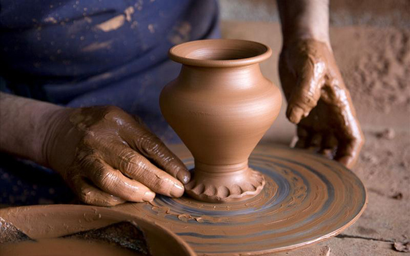

La Casa de Barro, lo Mejor en Alfareria
Familia de tradicion alfarera, tras generaciones a tras en el oficio hemos sabido perseverar la esencia de la artesania propia, nuetro pueblo lugar de trabjo.
La incorporacion de las nuevas generaciones a lo largo de los años ha permitido la modernizacion de nuestras istalaciones, adaptandonos a las nuevas tendencias y exigencias del mercado sin olvidar a nuestro estilo unico y caracteristico.
Producimos en nuestro taller un amplio catalogo de piezas la mayor parte de ellas fabricadas a mano por nuestros maestros torneros de la manera mas autentica y tradicional.
Nuestro Estilo Artistico
Segun la tradicion de nuesto pueblo, y por el facil modelado y la alta resistencia de la arcilla que nos rodea siempre trabajamos modelando el barro en el torno con nuestras propias manos hasta conseguir la forma deseada.
La mayor parte de la ceramica que fabricamos esta destinada al sector de la jardineria con acabados que van de la terracota al vidriado, aportando diferentes colores y texturas a cada modelo.